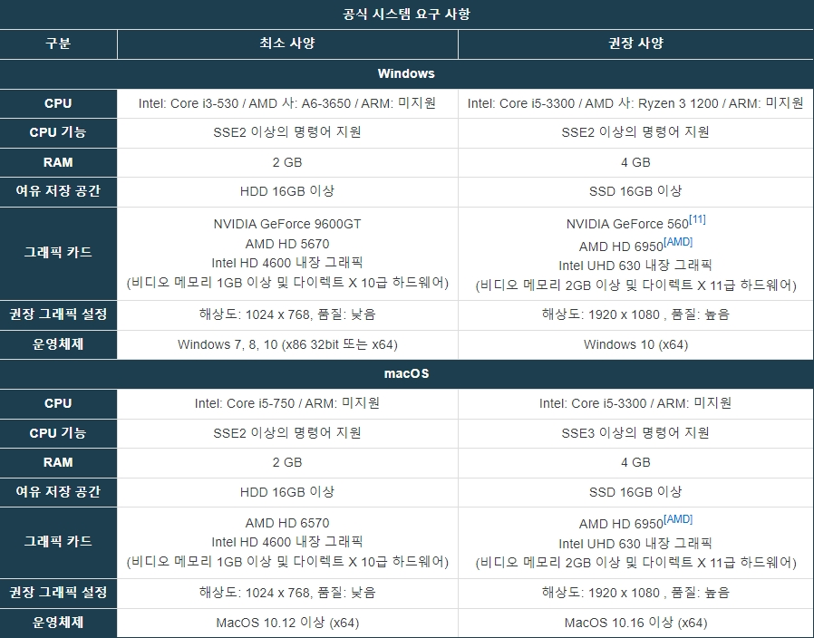
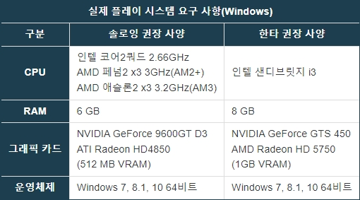

LEAGUE OF LEGENDS-시스템 요구 사항
- 개요
- 시스템 요구 사항
- 세계관
1. 시스템 요구 사항

2021년 9월 5일 공식 요구 사양 개편 이전까지의 요구 사양은 '클라이언트 실행'에 필요한 사양이었으며, 실제 플레이 사양 또한 높아진지 꽤 오래 됐었다. 물론 배틀그라운드, 오버워치, 피파 온라인 4 등 비교적 최근에 나온 게임들에 비하면 저 요구 사항도 저사양에 속한 지라 옵션 타협만 잘하면 무리없이 플레이할 수 있었던 건 똑같았다.

32비트 게임인 주제에 램을 엄청나게 퍼먹기 때문에, 램 4GB로는 32비트 윈도우든 64비트 윈도우든 시스템에 굉장히 부담이 많이 걸리며 정상적인 장시간 플레이가 어렵다. 플레이는 한다고 해도 후폭풍이 크다. 32비트 OS에서 램 4GB 장착 시 램 용량 3.5GB 인식되는 메인보드에 저사양용 임베디드 계열 32비트 윈도우를 깔고 인식되지 않는 0.5GB도 주소 확장 영역 설정하고 램디스크로 만들어 페이지 파일 가상 메모리 활용 우선순위로 잡아주고 HDD에 보조 가상 메모리까지 지정해 주고 나서야 그나마 가상 메모리 버벅임이 최소화되어 램 4GB로 원활하게 플레이가 된다. 해서 64비트 OS에 램 6GB는 기본이고, 브라우저나 플러그인을 같이 돌리려면 8GB가 필요하다.
그나마 다행이라면 CPU와 RAM 요구 사양에 비해 GPU는 굉장히 널널하다는 점이다. CPU, RAM이 충분하다면 내장형 인텔 GPU로도 쾌적한 플레이가 가능하다. 예를 들어 i5-6200, 8GB RAM, 인텔 HD 520 노트북으로 상옵 70+프레임이 나온다. 물론 같은 조건이라도 컴퓨터 최적화 상태에 따라 다를 수 있기 때문에 Ctrl+F로 한타 교전 시의 프레임을 확인하고 옵션 수준을 정하면 된다. 리그 오브 레전드가 큰 인기를 얻게 된 이유 중 하나이다. 웹서핑 및 문서 작성용으로만 만들어진 저사양 사무용 노트북도 해상도 조절, 낮음 ~ 중간 그래픽 타협만으로도 60프레임 이상을 찍는 것은 물론이며 설령 프레임이 20 ~ 30대까지 낮아지더라도 한타 싸움에 심각한 지장을 줄 정도로 안 좋아지지 않기 때문.
엔진 자체가 구형인 탓인지 네이티브 쿼드코어 이상을 제대로 활용하지 못하는 편이다. 원래는 듀얼코어로도 잘 돌아갔지만 어느 시점 이후로 CPU 점유율이 크게 증가해서 듀얼코어 펜티엄으로는 한타도 어렵게 되어버렸다. 현재 엔진은 인텔 코어2쿼드, AMD K10-II x3, 인텔 2세대 이상 i3에서 이용효율이 높다.(즉 트리플코어 또는 듀얼코어+@x2스레드 에 최적화되어있다.) 인텔 1세대 i3로는 제대로 구동이 되지 않는다.
ARM 프로세서를 공식 지원하지는 않지만 로제타2를 이용한 에뮬레이션을 통해 Apple Silicon을 탑제한 Mac에서도 플레이가 가능하다. FHD급으로 해상도 타협만 한다면 60프레임 유지가 가능하다.